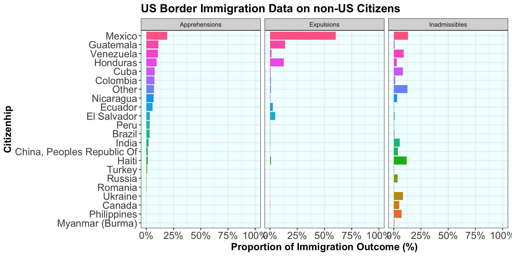
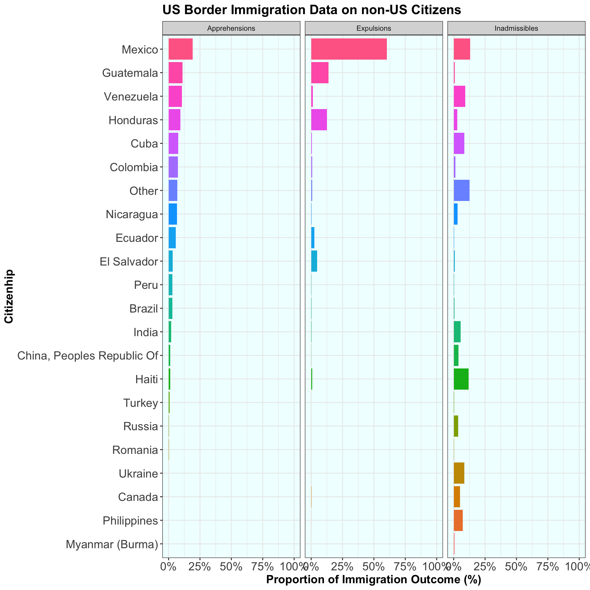
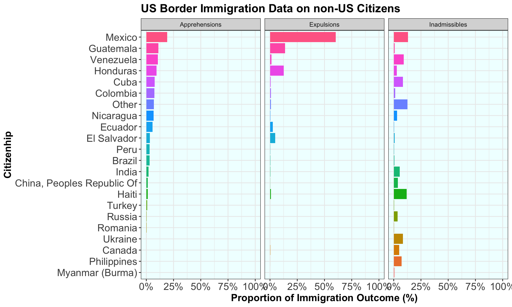

Week 14 - Tidy Tuesday 5
2024-12-01
Overview
This week, I decided to learn how to make a Quarto Presentation.
In this presentation, we will learn about:
- incorporating figures in slides
- showing the code along the figures
- adding code chunks to highlight elements
- changing the layout of the slides
- miscellaneous features of Quarto Presentations
Setting Up the Script
Load the libraries
Load the Tidy Tuesday Data
Making a graph in Quarto
We can display figures in a Quarto slide by directly coding in a chunk of code. The result is displayed below.
However, the actual code chunk is hidden from the viewer and we have to remember to add {echo: true} for the code to be displayed.
Now let’s see it with the code chunk
# In a stacked layout
fig_ex + theme_bw() +
theme(plot.title = element_text(size=16, face = "bold"),
plot.subtitle = element_text(size=15),
axis.title = element_text(size = 14, face = "bold"),
axis.text = element_text(size = 14),
legend.position = "none",
panel.background = element_rect(fill = "azure1"))
next to each other
df_short %>%
ggplot(aes(x= citizenship, y = encounter_frac, fill = citizenship))+
geom_bar(stat = "identity") +
facet_wrap(.~encounter_type) +
coord_flip() +
labs(title = "US Border Immigration Data on non-US Citizens",
x = "Citizenhip",
y= "Proportion of Immigration Outcome (%)")+
scale_y_continuous(labels = scales::percent, limits=c(0,1))+
theme_bw() +
theme(plot.title = element_text(size=16, face = "bold"),
plot.subtitle = element_text(size=15),
axis.title = element_text(size = 14, face = "bold"),
axis.text = element_text(size = 14),
legend.position = "none",
panel.background = element_rect(fill = "azure1")) 
On different slides
df_short %>%
ggplot(aes(x= citizenship, y = encounter_frac, fill = citizenship))+
geom_bar(stat = "identity") +
facet_wrap(.~encounter_type) +
coord_flip() +
labs(title = "US Border Immigration Data on non-US Citizens",
x = "Citizenhip",
y= "Proportion of Immigration Outcome (%)")+
scale_y_continuous(labels = scales::percent, limits=c(0,1))+
theme_bw() +
theme(plot.title = element_text(size=16, face = "bold"),
plot.subtitle = element_text(size=15),
axis.title = element_text(size = 14, face = "bold"),
axis.text = element_text(size = 14),
legend.position = "none",
panel.background = element_rect(fill = "azure1")) On different slides
Highlighting elements in the code
You can highlight parts of the code by adding a yaml instruction:
{code-line-numbers: “LINES OF CODE TO HIGHLIGHT”}
Vertical lines can be used to highlight groups of code
# Here I am highlightiing lines 3-5, then 7-10 and then lines 5,6,13.
# and the figure is set to another slide
df_short %>%
ggplot(aes(x= citizenship, y = encounter_frac, fill = citizenship))+
geom_bar(stat = "identity") +
facet_wrap(.~encounter_type) +
coord_flip() +
labs(title = "US Border Immigration Data on non-US Citizens",
x = "Citizenhip",
y= "Proportion of Immigration Outcome (%)")+
scale_y_continuous(labels = scales::percent, limits=c(0,1))+
theme_bw() +
theme(plot.title = element_text(size=16, face = "bold"),
plot.subtitle = element_text(size=15),
axis.title = element_text(size = 14, face = "bold"),
axis.text = element_text(size = 14),
legend.position = "none",
panel.background = element_rect(fill = "azure1")) Highlighting elements in the code

Adding multiple elements to a slide
We can add 2 figures side by side using a fence:
{::: {.column}
::: }
| Encounter Type | Total Encounter | Encounter Fraction (%) | |
|---|---|---|---|
| Brazil | Apprehensions | 155285 | 3.07 |
| Brazil | Expulsions | 8356 | 0.28 |
| Brazil | Inadmissibles | 25208 | 0.73 |
| Colombia | Apprehensions | 372208 | 7.36 |
| Colombia | Expulsions | 26560 | 0.90 |
| Colombia | Inadmissibles | 47530 | 1.38 |
| Mexico | Apprehensions | 976149 | 19.29 |
| Mexico | Expulsions | 1783494 | 60.23 |
| Mexico | Inadmissibles | 451408 | 13.08 |

Miscellaneous features
- Adding a background
- Call out boxes
- Pauses
Adding a background
This can be achieved by using :
{background-image=“PATH to IMAGE”}.
Call out boxes
Fun Fact!
The title of the box can be changed with “title= ‘XXX’”.
Caution
This can be useful to draw attention to something.
Warning
Use this to warn others.
Important
This one can emphasize something very important.
Pauses
Pauses can be achieved using {. . . } to separate the content that you want to separate.
Here, we have this text element…
…separated from this picture.
Thank you for listening!
Quarto Presentations are pretty cool!

OCN 682: Tidy Tuesday 5